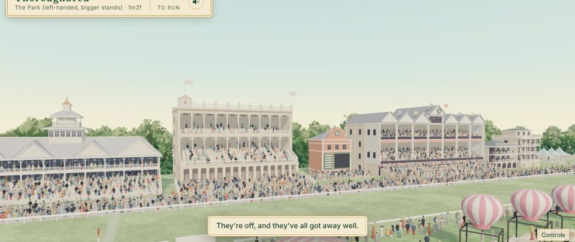
The Park (left-handed, bigger stands)
Galloping course, the bigger stand side · galloping
About 14.2f round · 3.94f run-in · starts 5f, 6f, 7f, 1m, 1m round, 1m1f, 1m2f, 1m4f, 1m6f, 2m, 2m2f
Races Ayr, Doncaster, Haydock, Newbury, Newcastle, Nottingham
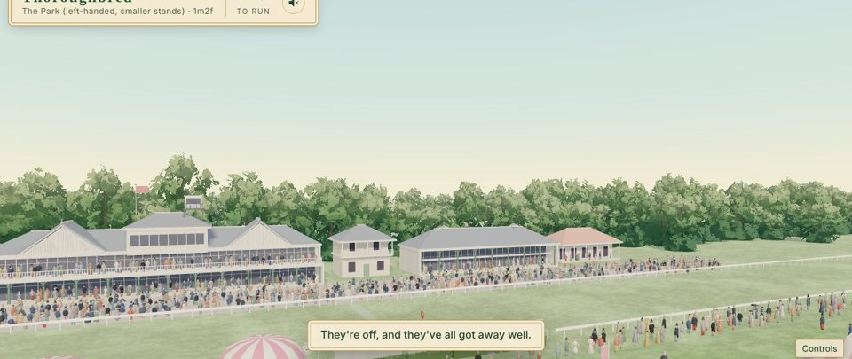
The Park (left-handed, smaller stands)
Country galloping course · galloping
About 14.2f round · 3.94f run-in · starts 5f, 6f, 7f, 1m, 1m round, 1m1f, 1m2f, 1m4f, 1m6f, 2m, 2m2f
Races Chepstow, Ffos Las, Redcar, Wetherby, Yarmouth
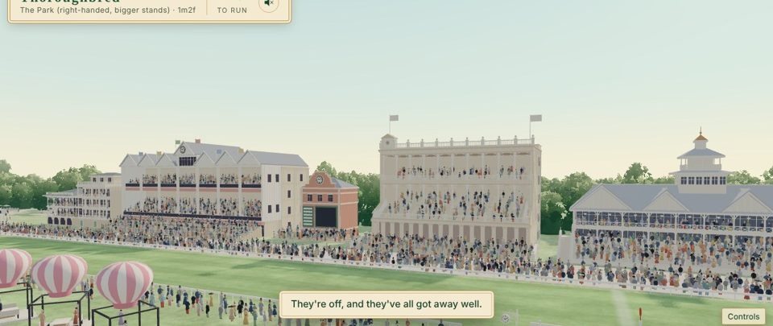
The Park (right-handed, bigger stands)
Galloping course, the bigger stand side · galloping
About 14.2f round · 3.94f run-in · starts 5f, 6f, 7f, 1m, 1m round, 1m1f, 1m2f, 1m4f, 1m6f, 2m, 2m2f
Races Salisbury
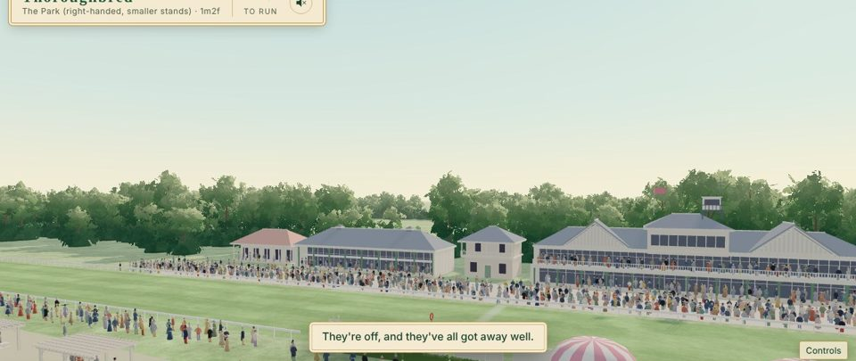
The Park (right-handed, smaller stands)
Country galloping course · galloping
About 14.2f round · 3.94f run-in · starts 5f, 6f, 7f, 1m, 1m round, 1m1f, 1m2f, 1m4f, 1m6f, 2m, 2m2f
Races Leicester
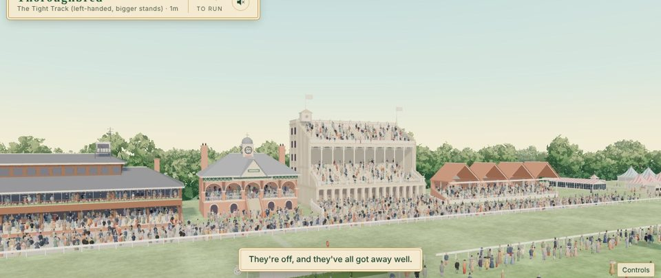
The Tight Track (left-handed, bigger stands)
Market-town course · sharp oval with a sprint spur
About 10.5f round · 2.9f run-in · starts 5f, 6f, 6f round, 7f, 1m, 1m1f, 1m2f, 1m3f, 1m4f, 1m6f, 2m
Races —
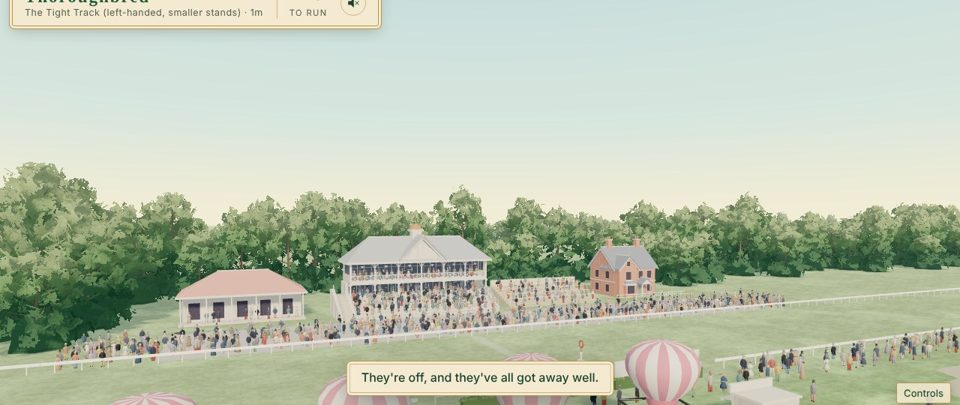
The Tight Track (left-handed, smaller stands)
Little country course · sharp oval with a sprint spur
About 10.5f round · 2.9f run-in · starts 5f, 6f, 6f round, 7f, 1m, 1m1f, 1m2f, 1m3f, 1m4f, 1m6f, 2m
Races Catterick, Southwell, Thirsk
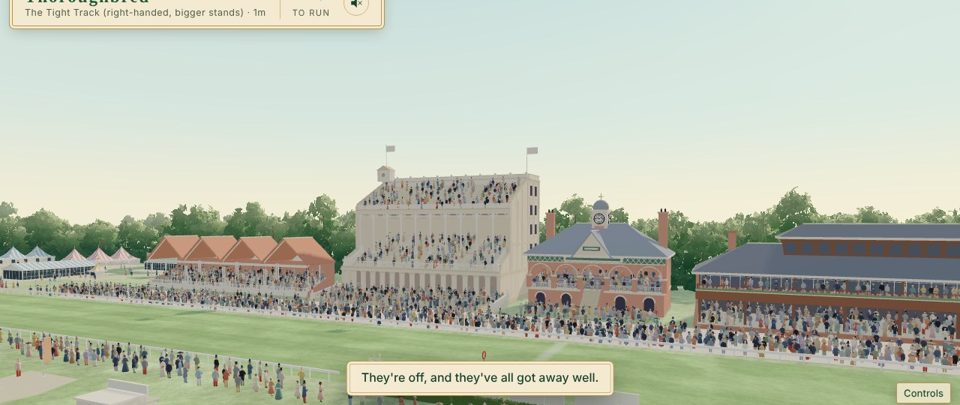
The Tight Track (right-handed, bigger stands)
Market-town course · sharp oval with a sprint spur
About 10.5f round · 2.9f run-in · starts 5f, 6f, 6f round, 7f, 1m, 1m1f, 1m2f, 1m3f, 1m4f, 1m6f, 2m
Races Windsor
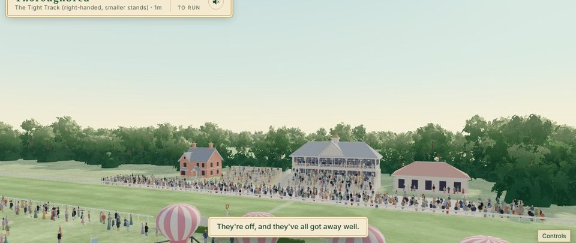
The Tight Track (right-handed, smaller stands)
Little country course · sharp oval with a sprint spur
About 10.5f round · 2.9f run-in · starts 5f, 6f, 6f round, 7f, 1m, 1m1f, 1m2f, 1m3f, 1m4f, 1m6f, 2m
Races Musselburgh, Ripon
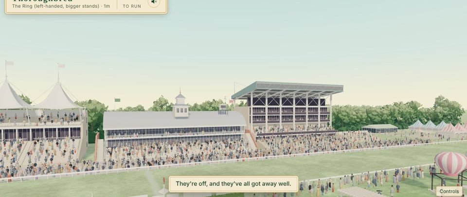
The Ring (left-handed, bigger stands)
Floodlit stadium · very tight, near-circular
About 8.4f round · 1.4f run-in · starts 5f, 6f, 7f, 1m, 1m1f, 1m2f, 1m4f, 1m5f, 2m
Races Chelmsford City, Chester, Lingfield (AW), Wolverhampton
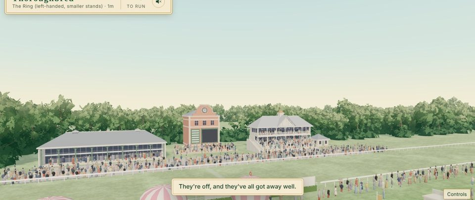
The Ring (left-handed, smaller stands)
Suburban park · very tight, near-circular
About 8.4f round · 1.4f run-in · starts 5f, 6f, 7f, 1m, 1m1f, 1m2f, 1m4f, 1m5f, 2m
Races —
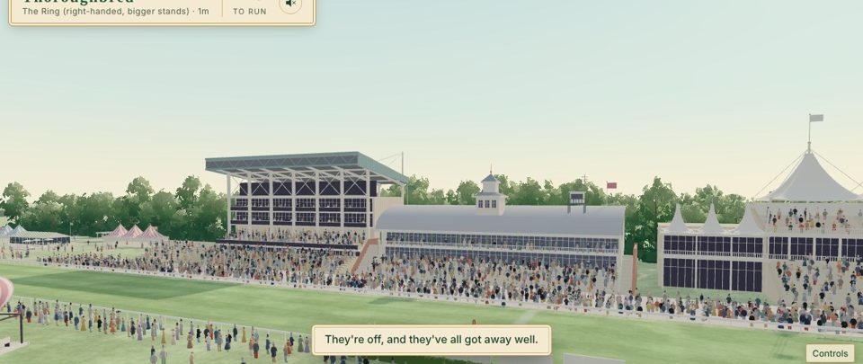
The Ring (right-handed, bigger stands)
Floodlit stadium · very tight, near-circular
About 8.4f round · 1.4f run-in · starts 5f, 6f, 7f, 1m, 1m1f, 1m2f, 1m4f, 1m5f, 2m
Races Kempton
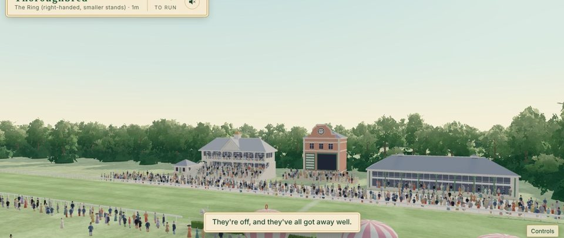
The Ring (right-handed, smaller stands)
Suburban park · very tight, near-circular
About 8.4f round · 1.4f run-in · starts 5f, 6f, 7f, 1m, 1m1f, 1m2f, 1m4f, 1m5f, 2m
Races —
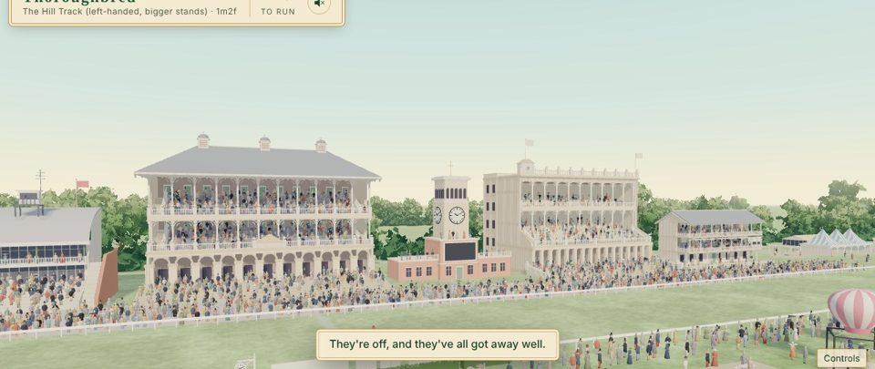
The Hill Track (left-handed, bigger stands)
Hill course, the bigger stand side · stiff, uphill finish
About 13.6f round · 3.55f run-in · starts 5f, 6f, 7f, 1m, 1m1f, 1m2f, 1m4f, 1m6f, 2m
Races —
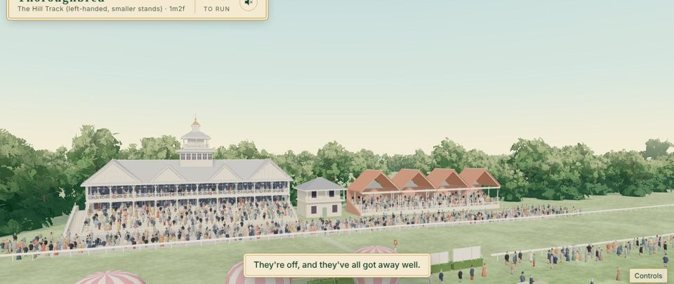
The Hill Track (left-handed, smaller stands)
Northern hill course · stiff, uphill finish
About 13.6f round · 3.55f run-in · starts 5f, 6f, 7f, 1m, 1m1f, 1m2f, 1m4f, 1m6f, 2m
Races Bath, Pontefract
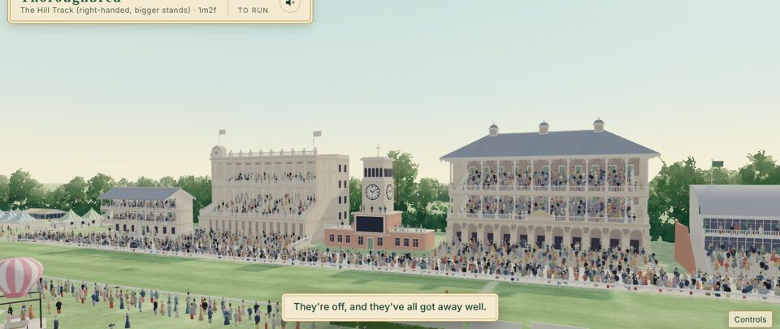
The Hill Track (right-handed, bigger stands)
Hill course, the bigger stand side · stiff, uphill finish
About 13.6f round · 3.55f run-in · starts 5f, 6f, 7f, 1m, 1m1f, 1m2f, 1m4f, 1m6f, 2m
Races Sandown
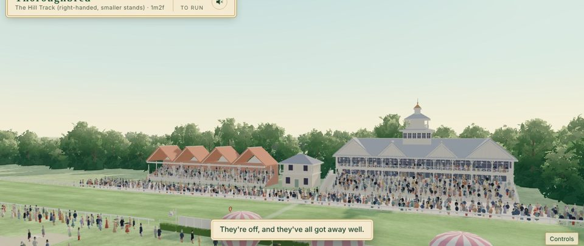
The Hill Track (right-handed, smaller stands)
Northern hill course · stiff, uphill finish
About 13.6f round · 3.55f run-in · starts 5f, 6f, 7f, 1m, 1m1f, 1m2f, 1m4f, 1m6f, 2m
Races Beverley, Carlisle, Hamilton
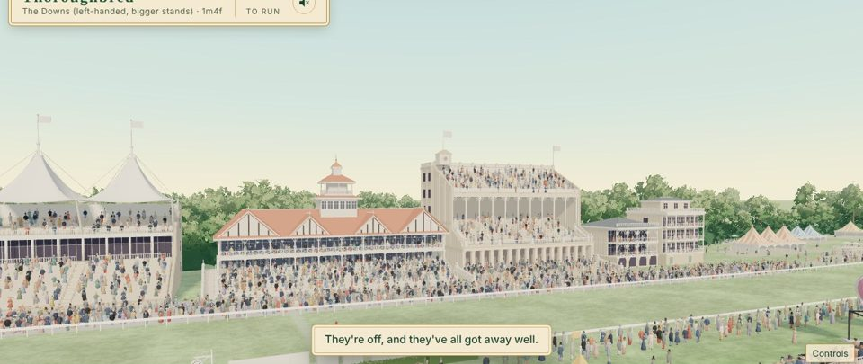
The Downs (left-handed, bigger stands)
Downland course · undulating, downhill turn
About 12.5f round · 2.89f run-in · starts 5f, 6f, 7f, 1m, 1m1f, 1m2f, 1m4f, 1m6f, 2m
Races Epsom, Lingfield (turf)
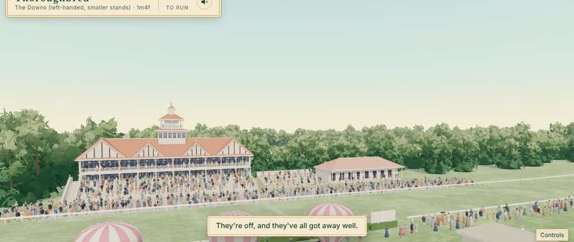
The Downs (left-handed, smaller stands)
Seaside downs · undulating, downhill turn
About 12.5f round · 2.89f run-in · starts 5f, 6f, 7f, 1m, 1m1f, 1m2f, 1m4f, 1m6f, 2m
Races Brighton
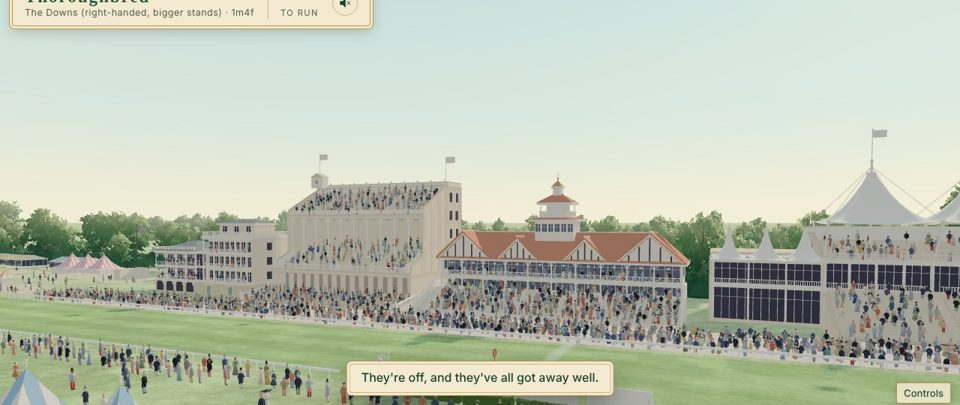
The Downs (right-handed, bigger stands)
Downland course · undulating, downhill turn
About 12.5f round · 2.89f run-in · starts 5f, 6f, 7f, 1m, 1m1f, 1m2f, 1m4f, 1m6f, 2m
Races Goodwood
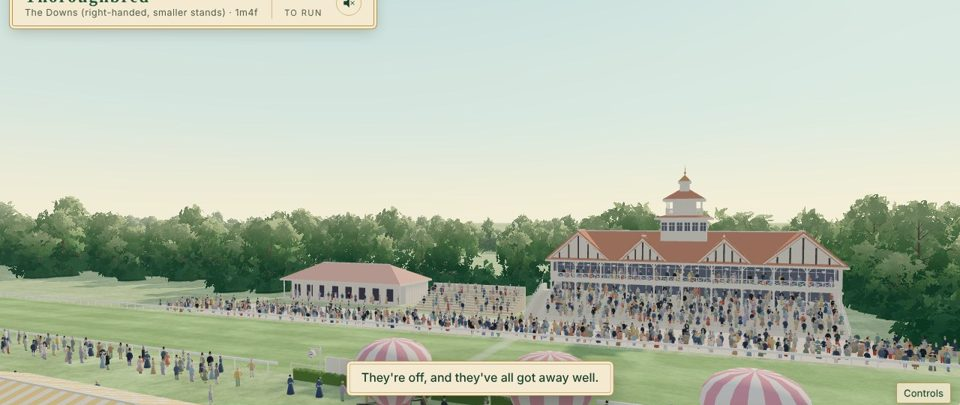
The Downs (right-handed, smaller stands)
Seaside downs · undulating, downhill turn
About 12.5f round · 2.89f run-in · starts 5f, 6f, 7f, 1m, 1m1f, 1m2f, 1m4f, 1m6f, 2m
Races —